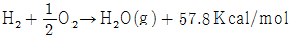
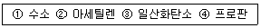
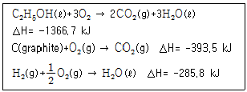
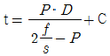
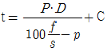
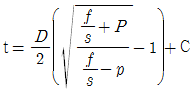
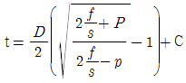
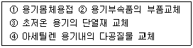
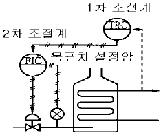

가스산업기사 (2004-09-05 기출문제)
1과목: 연소공학
1. 등심연소시 화염의 높이에 대해 옳게 설명한 것은?
- 공기 온도가 높을수록 커진다.
- 공기 온도가 낮을수록 커진다.
- 공기 유속이 높을수록 커진다.
- 공기 유속이 낮을수록 작아진다.
(정답률: 82%)

2. 기체연료의 연소형태에 해당되는 것은?
- premixing burning
- pool burning
- evaporating combustion
- spray combustion
(정답률: 58%)
3. 다음 중 n-부탄의 성질을 옳게 설명한 것은?
- 상압, 0℃에서 액화한다.
- 비점이 프로판보다 낮다.
- 임계압력이 i-부탄보다 낮다.
- 압력을 높이면 비점도 높아진다.
(정답률: 36%)
4. 다음 물질 중 분진폭발과 가장 관계가 깊은 물질은?
- 마그네슘
- 탄산가스
- 아세틸렌
- 암모니아
(정답률: 76%)
5. 연소공기비가 표준보다 큰 경우 어떤 현상이 발생하는가?
- 매연 발생량이 적어진다.
- 배가스량이 많아지고 연소효율이 저하된다.
- 화염온도가 높아져 버너에 손상을 입힌다.
- 연소실 온도가 높아져 전열효과가 커진다.
(정답률: 59%)
6. 다음 고체연료의 연소방법 중 미분탄 연소에 관한 설명이 아닌 것은?
- 2상류 상태에서 연소된다.
- 고정층에 공기를 통하여 연소시킨다.
- 가스화속도가 낮고 연소완료에 시간과 거리가 필요하다.
- 화격자연소보다도 낮은 공기비로써 높은 연소효율을 얻을 수 있다.
(정답률: 42%)
7. 수소의 연소반응식은 다음과 같이 나타낸다.

수소를 일정한 압력에서 이론 산소량만으로 완전연소시켰을 때 생성된 수증기의 온도는? (단, 수증기의 정압비열10cal/mol·K, 수소와 산소의 공급온도 25℃, 외부로의 열손실은 없음)- 5580K
- 5780K
- 6⑤3K
- 6078K
(정답률: 44%)
8. 연소속도에 대한 설명 중 옳지 않은 것은?
- 단위면적의 화염면이 단위시간에 소비하는 미연소혼합기의 체적이라 할 수 있다.
- 미연소혼합기의 온도를 높이면 연소속도는 증가한다.
- 일산화탄소 및 수소 기타 탄화수소계 연료는 당량비가 1.1부근에서 연소속도의 피이크가 나타난다.
- 공기의 산소분압을 높이면 연소속도는 빨라진다.
(정답률: 76%)
9. 온도 30℃, 압력 740mmHg인 어떤 기체 342 mL를 표준상태(0℃, 1기압)로 하면 몇 mL가 되겠는가?
- 300
- 350
- 400
- 450
(정답률: 53%)
10. 기체의 임계온도에 관한 다음 사항 중 맞는 것은?
- 수소는 임계온도가 높으나 상온에서는 액화가 불가능하다.
- 질소는 임계온도가 낮지만 상온에서 액화가 가능하다
- 메탄은 임계온도가 낮으며 상온에서는 액화가 불가능하다.
- 이산화황은 극저온에 가압하여야만 액화가 가능하다.
(정답률: 58%)
11. 76mmHg, 23℃에 있어서의 수증기 100m3 의 중량은 얼마인가?(단, 수증기는 이상기체 거동을 한다고 가정한다.)
- 0.74 kg
- 7.4 kg
- 74 kg
- 740 kg
(정답률: 72%)
12. 다음 메탄가스의 설명에 관한 내용 중 옳은 것은?
- 고온에서 수증기와 작용하면 반응하여 일산화탄소와 수소를 생성한다.
- 공기 중 메탄가스가 60% 정도 함유되어 있는 기체가 점화되면 폭발한다.
- 수분을 함유한 메탄은 금속을 급격히 부식시킨다.
- 메탄은 조연성 가스이기 때문에 다른 유기화합물을 연소시킬 때 사용한다.
(정답률: 75%)
13. 다음 가스 중 공기중에서 폭발범위가 넓은 순서로 된 것은?

- ①-②-③-④
- ①-②-④-③
- ②-①-③-④
- ②-①-④-③
(정답률: 74%)
14. 혼합기체의 온도를 고온으로 상승시켜 자연착화를 일으키고, 혼합기체의 전 부분이 극히 단 시간내에 연소하는 것으로서 압력 상승의 급격한 현상을 무엇이라 하는가?
- 전파연소
- 폭발
- 확산연소
- 예혼합연소
(정답률: 84%)
15. 점화원이 될 우려가 있는 부분을 용기 안에 넣고 불활성가스를 용기안에 채워넣어 폭발성가스가 침입하는 것을 방지하는 구조로서 봉입식, 밀봉식, 통풍식 3종류가 있는 것은 어떤 방폭구조인가?
- 압력방폭구조
- 안전증방폭구조
- 유입방폭구조
- 본질방폭구조
(정답률: 78%)
16. 연소한계를 설명한 내용 중 옳은 것은?
- 착화온도의 상한과 하한
- 물질이 탈 수 있는 최저온도
- 완전 연소가 될 때의 산소공급 한계
- 연소 가능한 가스와 공기와의 상,하한 혼합비율
(정답률: 56%)
17. 다음 중 연소의 정의로 가장 적절한 표현은?
- 물질이 산소와 결합하는 모든 현상
- 물질이 빛과 열을 내면서 산소와 결합하는 현상
- 물질이 열을 흡수하면서 산소와 결합하는 현상
- 물질이 열을 발생하면서 수소와 결합하는 현상
(정답률: 84%)
18. 대기압 760㎜Hg 하에서 계기압력이 2atm 이었다면 절대압력은 약 몇 psi인가?
- 22.3psi
- 33.2psi
- 44.1psi
- 55.1psi
(정답률: 66%)
19. 아래에 제시한 에탄올, 흑연 및 수소의 연소엔탈피를 이용하여 2C(graphite) + 2H2(g)+ H2O → C2H5OH(ℓ ) 반응에 대한 엔탈피 변화량은 얼마인가? (단, 25℃임)

- 8.1 kJ
- -8.1 kJ
- 687.4 kJ
- -687.4 kJ
(정답률: 25%)
20. 어떤 화합물 0.085g을 기화시킨 결과 730mmHg, 60℃에서 23.5mL의 체적을 차지한다. 이 물질의 분자량은 약 얼마인가?
- 102.87 g/mol
- 74.75 g/mol
- 10.287 g/mol
- 7.475 g/mol
(정답률: 32%)
2과목: 가스설비
21. 케이싱 내에 모인 기체를 출구각이 90도인 임펠러가 회전하면서 기체의 원심력 작용에 의해 임펠러의 중심부에서 흡입되어 외부로 토출하는 압축기는?
- 회전식 압축기
- 축류식 압축기
- 왕복식 압축기
- 원심식 압축기
(정답률: 58%)
22. 안지름 10㎝ 의 파이프를 플랜지에 접속하였다. 이 파이프 내에 40㎏/㎝2 의 압력으로 볼트 1개에 걸리는 힘을 400㎏ 이하로 하고자 할 때 볼트수는 최소 몇 개 필요한가?
- 5개
- 8개
- 12개
- 15개
(정답률: 75%)
23. 유량 100m3/h, 양정 150m, 펌프의 효율 70%, 액체의 비중량 1kgf/ℓ 일 때 펌프의 소요동력(Kw)은?
- 48kw
- 58kw
- 68kw
- 70kw
(정답률: 53%)
24. 대용량의 액화가스저장탱크 주위에는 방류둑을 설치하여야 한다. 방류둑의 설치목적으로 옳은 것은?
- 불순분자들이 저장탱크에 접근하는 것을 방지하기 위하여
- 액상의 가스가 누출될 경우 그 가스를 쉽게 방류시키기 위하여
- 빗물이 저장탱크주위로 들어오는 것을 방지하기 위하여
- 액상의 가스가 누출된 경우 그 가스의 유출을 방지하기 위하여
(정답률: 89%)
25. 고온, 고압에서 암모니아 가스의 장치에 사용할 수 있는 적합한 금속은?
- 알루미늄합금
- 동합금
- 탄소강
- 오스테나이트계스테인레스강
(정답률: 63%)
26. 프로판의 비중을 1.5 라 하면 입상 50m 지점에서의 배관의 수직방향에 의한 압력손실은 몇 mm 수주 인가?
- 12.9
- 19.4
- 32.3
- 75.2
(정답률: 63%)
27. 용기 부속품의 인장시험에서 인장강도와 연신율을 옳게 나타낸 것은?
- 인장강도-180.7N/mm2 이상, 연신율-10% 이상
- 인장강도-248.5N/mm2 이상, 연신율-12% 이상
- 인장강도-313.6N/mm2 이상, 연신율-15% 이상
- 인장강도-421.3N/mm2 이상, 연신율-18% 이상
(정답률: 48%)
28. 외경과 내경의 비가 1.2 미만인 경우 배관의 두께 산출식은? (단, t:배관의 두께[mm], P:상용압력[MPa], D:내경에서부식여유를 뺀수치[mm], f:재료의 인장강도[N/mm2]규격 최소치이거나 항복점[N/mm2]규격 최소치의 1.6배, C:관내면의 부식여유[mm], s:안전율)




(정답률: 67%)
29. LPG 사용시설에서 사용되는 2단감압방식조정기의 장점이라고 할 수 없는 것은?
- 공급압력이 안정적이다.
- 설비가 간단하다.
- 내경이 작은 배관을 사용해도 된다.
- 연소기의 특성에 따라 다양한 압력을 사용할 수 있다.
(정답률: 62%)
30. 설치위치, 사용목적에 따른 정압기의 분류에서 각 도시의 도시가스회사 소유 배관과 연결되기 직전에 설치되는 정압기는?
- 고압정압기
- 지구정압기
- 지역정압기
- 단독정압기
(정답률: 78%)
31. 가스공급 설비에서 부취제의 주입 목적은?
- 가스 흐름이 용이하도록 하기 위해서
- 수분의 혼입을 방지하기 위해서
- 가스 누출의 조기발견을 위해서
- 가스와 공기의 혼합을 용이하도록 하기 위해서
(정답률: 75%)
32. 용기(저탄소강제) 제작의 과정에서 일반적으로 행하는 풀림(Annealing)의 효과를 옳지 않게 기술한 것은?
- 재료를 연화시킨다.
- 재료의 결정 조직을 조정한다.
- 잔류 응력을 제거한다.
- 재료의 인장 강도를 증가시킨다.
(정답률: 52%)
33. 압축기의 내부 윤활유 사용에 대한 설명으로 옳지 않은 것은?
- LPG 압축기에는 식물성 기름을 사용한다.
- 산소 압축기에는 묽은 글리세린 수용액을 사용한다.
- 염소가스 압축기에는 진한 황산을 사용한다.
- 공기 압축기에는 물이나 식물성 기름을 사용한다.
(정답률: 54%)
34. 동일 성능의 원심펌프 2대를 병렬로 연결 설치한 경우에 유량 및 양정의 변화는?
- 유량은 불변, 양정은 증가
- 유량은 증가, 양정은 불변
- 유량 및 양정 증가
- 유량 및 양정 불변
(정답률: 70%)
35. 두 개의 다른 금속이 접촉되어 전해질 용액내에 존재할때 다른 재질의 금속간 전위차에 의해 용액내에서 전류가 흐르고 이에 의해 양극부가 부식이 되는 현상을 무엇이라 하는가?
- 농담전지 부식
- 침식부식
- 공식
- 갈바닉 부식
(정답률: 86%)
36. 아세틸렌을 용기에 충전하는 경우 충전중의 압력은 온도에 불구하고 몇 MPa 이하로 하여야 하는가?
- 2.5
- 3.0
- 3.5
- 4.0
(정답률: 70%)
37. 단열을 한 배관 중 작은 구멍을 내고 이 관에 압력이 있는 액체를 흐르게 하면 유체가 작은 구멍을 통할 때 유체의 압력이 하강함과 동시에 온도가 변화하는 현상을 무엇이라고 하는가?
- 베르누이의 효과
- 주울-톰슨 효과
- 토리첼리 효과
- 도플러의 효과
(정답률: 64%)
38. 펄스반사법과 공진법 등으로 재료내부의 결함을 비파괴 검사하는 방법은?
- 음향검사
- 침투검사
- 자기검사
- 초음파검사
(정답률: 76%)
39. 가정용 LP가스 용기로 가장 흔히 사용되는 용기는?
- 용접용기
- 납땜용기
- 이음새 없는 용기
- 구리용기
(정답률: 78%)
40. 다음 중 LiBr-H2O계 흡수식 냉동기에서 가열원으로서 가스가 사용되는 곳은?
- 증발기
- 흡수기
- 재생기
- 응축기
(정답률: 58%)
3과목: 가스안전관리
41. 차량에 고정된 탱크의 운반기준에 대한 설명으로 옳지 않은 것은?
- 차량 앞, 뒤 보기 쉬운 곳에 황색 글씨로 위험고압가스라 표기한다.
- 2개 이상 탱크를 동일차량에 적재 시 탱크마다 주밸브를 설치한다.
- 충전관에는 안전밸브, 압력계 및 긴급 탈압밸브를 설치한다.
- LPG 를 제외한 가연성가스 및 산소탱크의 내용적은 18000ℓ 이하여야 한다.
(정답률: 50%)
42. 산소의 품질검사 기준에서 순도 및 용기내의 가스 충전압력을 옳게 나타낸 것은?
- 98% 이상 - 35℃에서 11.8MPa이상
- 99.5% 이상 - 35℃에서 11.8MPa이상
- 98% 이상 - 35℃에서 13.8MPa이상
- 99.5% 이상 - 35℃에서 13.8MPa이상
(정답률: 77%)
43. 동일 차량에 혼합 적재하여 운반할 수 없는 가스는?
- Cl2 + C2H2
- O2 + C2H2
- LPG + Cl2
- LPG + O2
(정답률: 85%)
44. 독성가스누출을 대비하기 위하여 충전설비에 제해설비를 한다. 제해설비를 하지 아니 하여도 되는 독성가스는?
- 아황산가스
- 암모니아
- 염소
- 사염화탄소
(정답률: 56%)
45. 고압가스저장탱크를 설치하기 위한 지반조사가 아닌 것은?
- 보링(Boring)
- 표준관입시험
- 배인(Vane)시험
- 수압시험
(정답률: 52%)
46. 내용적이 10,000 ℓ 인 액화산소 저장탱크의 저장능력은? (단, 액화산소의 비중은 1.04이다.)
- 6225kg
- 9615kg
- 9360kg
- 10400kg
(정답률: 68%)
47. 수소 400m3 를 차량에 적재하여 운반할 경우 운전상의 주의사항으로 옳지 않은 것은?
- 수소의 명칭· 성질 및 이동중의 재해방지를 위하여 필요한 주의사항을 기재한 서면을 운반책임자 또는 운전자에게 교부하고 운반중에 휴대를 시켜야 한다.
- 부득이한 경우를 제외하고는 장시간 정차해서는 아니된다.
- 차량의 운반책임자와 운전자가 동시에 차량에서 이탈하지 아니하여야 한다.
- 300㎞ 이상의 거리를 운행하는 경우에는 중간에 충분한 휴식을 취한 후 운행하여야 한다.
(정답률: 82%)
48. 내용적 94ℓ 의 LPG 용기에 프로판을 충전할 때 최대충전량은 몇 kg 인가? (단, 프로판의 충전정수는 2.35 이다.)
- 24kg
- 40kg
- 85kg
- 221kg
(정답률: 71%)
49. 방폭구조란 전기· 전자장치가 가스폭발의 점화원으로 작용하는 것을 방지하는 구조를 말한다. 이 중 전기기기 내부에서 폭발성가스의 폭발이 발생하여도 용기가 폭발압력에 견디고, 또한 접합면 등을 통해 외부로 불꽃이 전파되는 것을 방지하도록 설계된 방폭구조를 무엇이라 하는가?
- 내압(耐壓)방폭구조
- 안전증(安全增)방폭구조
- 압력(壓力)방폭구조
- 본질안전(本質安全)방폭구조
(정답률: 86%)
50. 수소:45vol%, 일산화탄소:10vol%, 메탄:45vol% 인 혼합가스의 폭발 상한계(%) 값은? (단, H2:4~75, CO:12.5~74, CH4:5~15 폭발범위임)
- 20.5%
- 27.0%
- 32.5%
- 35.6%
(정답률: 69%)
51. 다음 중 아세틸렌의 침윤제로 사용되고 있는 것은?
- 아세톤, DMF
- 에탄올, 석유
- DME, 벤젠
- 포름알데이드, 톨루엔
(정답률: 80%)
52. 고압가스특정제조허가의 대상이 아닌 것은?
- 석유정제업자의 석유정제시설로서 저장능력 100톤 이상
- 석유화학공업자의 석유화학공업 시설로서 처리능력 10,000m3 이상
- 철강공업자의 철강공업시설로서 처리능력 10,000m3이상
- 비료생산사업자의 비료제조시설로서 처리능력 10,000m3이상
(정답률: 50%)
53. 특수가스의 하나인 실란(SiH4)의 주요 위험성은?
- 공기중에 누출되면 자연발화한다.
- 태양광에 의해 쉽게 분해된다.
- 분해시 독성물질을 생성한다.
- 상온에서 쉽게 분해된다.
(정답률: 61%)
54. 고압가스를 제조하는 사업소의 교육훈련에 관한 설명으로 가장 옳은 것은?
- 교육훈련 지도자는 안전관리 책임자, 안전관리원 등 사내 관계자에 한하고 사업소 내용을 숙지하지 못한 사외자는 좋지 않다.
- 교육훈련대상자는 고압가스제조에 직접 관계없는 종업원은 제외함이 좋다.
- 교육훈련내용으로서는 사업소에서 취급하는 가스의 성질, 작업방법만 하는 것이 효과적이다.
- 교육훈련 효과 확인 방법으로는 필기시험, 구술시험, 감상문의 제출 등이 있다.
(정답률: 62%)
55. 다음에서 용기 제조자의 수리범위에 해당하는 것을 모두 고르면?

- ①, ②
- ③, ④
- ①, ②, ③
- ①, ②, ③, ④
(정답률: 70%)
56. 액화시안화수소가 고압가스안전관리법상 고압가스에 해당되기 위해서는 몇 ℃에서 몇 ㎩을 초과하여야 하는가?
- 15℃, 0Pa
- 15℃, 0.2Pa
- 35℃, 0Pa
- 35℃, 0.2Pa
(정답률: 39%)
57. 냉동기 냉매설비에 대하여 실시하는 기밀시험 압력의 기준으로 적합한 것은?
- 설계압력 이상의 압력
- 사용압력 이상의 압력
- 설계압력의 1.5배 이상의 압력
- 사용압력의 1.5배 이상의 압력
(정답률: 46%)
58. 에어졸충전설비와 화기 또는 인화성물질은 얼마 이상의 우회거리를 유지하여야 하는가?
- 6m 이상
- 7m 이상
- 8m 이상
- 10m 이상
(정답률: 71%)
59. 가스사고가 발생하게 되면 허가를 받은 액화석유가스충전 사업자는 한국가스안전공사에 통보하게 되어 있다. 다음중 가스사고발생 시 사업자가 서면으로 통보해야 할 사항이 아닌 것은?
- 사고발생일시
- 사고발생장소
- 사고내용
- 사고원인
(정답률: 72%)
60. 액화석유가스의 사용시설 설치기준으로 옳지 않은 것은?
- 용기저장능력이 100kg 초과시에는 용기보관실을 설치해야한다.
- 배관이음부와 전기계량기와는 60cm 이상 이격해야 한다.
- 가스온수기는 목욕탕에 설치하고 배기가 용이하도록 배기통을 설치한다.
- 사이폰용기는 기화장치가 설치되어 있는 시설에서만 사용한다.
(정답률: 74%)
4과목: 가스계측
61. 가스계량기의 검정 유효 기간은 몇 년인가?
- 5년
- 6년
- 7년
- 8년
(정답률: 83%)
62. 산소 64kg과 질소 14kg의 혼합기체가 나타내는 전압이 10기압이면 이 때 산소의 분압은 얼마인가?
- 2기압
- 4기압
- 6기압
- 8기압
(정답률: 54%)
63. 다음 중 탄성압력계가 아닌 것은?
- 벨로우즈식 압력계
- 다이어프램식 압력계
- 부르돈관 압력계
- 링밸런스식 압력계
(정답률: 56%)
64. 가스미터에 0.3ℓ /rev 의 표시가 의미하는 것은?
- 사용최대 유량이 0.3ℓ
- 계량실의 1주기 체적이 0.3ℓ
- 사용최소 유량이 0.3ℓ
- 계량실의 흐름속도가 0.3ℓ
(정답률: 76%)
65. 유리제온도계 중 알코올온도계의 특징으로 옳은 것은?
- 저온측정에 적합하다.
- 표면장력이 커 모세관현상이 적다.
- 열팽창계수가 작다.
- 열전도율이 좋다.
(정답률: 80%)
66. 습식가스미터의 원리는 어떤 형태에 속하는가?
- 피스톤 로우터리형
- 드럼형
- 오우벌형
- 다이어 프램형
(정답률: 66%)
67. 정상 상태에 있는 요소의 입력측에 어떤 변화를 주었을 때 출력측에 생기는 변화의 시간적 경과를 의미하는 것은?
- 과도 응답
- 정상 응답
- 인디시얼 응답
- 주파수 응답
(정답률: 54%)
68. 대량의 가스유량 측정에 사용되는 가스미터는?
- 막식가스미터
- 습식가스미터
- 루츠(Roots)가스미터
- 로터미터
(정답률: 77%)
69. 막식가스미터를 보정하려 할 때 기준이 되는 미터기는?
- 오리피스 미터기
- 벤투리 미터기
- 터빈 미터기
- 습식 미터기
(정답률: 72%)
70. 가스크로마토그래피에 사용되는 운반기체의 조건으로 거리가 가장 먼 것은?
- 순도가 높아야 한다.
- 비활성 이어야 한다.
- 독성이 없어야 한다.
- 분자량이 작아야 한다.
(정답률: 69%)
71. 적외선분광분석계로 분석이 불가능한 것은?
- CH4
- Cl2
- COCl2
- NH3
(정답률: 73%)
72. 검지가스와 누출 확인 시험지가 옳게 연결된 것은?
- 하리슨씨시약 - 포스겐
- KI전분지 - CO
- 염화파라듐지 - HCN
- 연당지 - 할로겐
(정답률: 75%)
73. 다음 그림과 같은 자동제어 방식은?

- 피드백제어
- 시퀀스제어
- 캐스케이드제어
- 프로그램제어
(정답률: 74%)
74. 유속 10m/s 의 물 속에 피토우관을 흐름방향으로 세울 때 수주의 높이는 얼마인가?
- 0.5m
- 5.1m
- 6.6m
- 7.3m
(정답률: 57%)
75. 혼합물의 구성 성분을 분리하는 분리관의 분리능에 가장 큰 영향을 미치는 것은?
- 시료의 용량
- 고정상 담체의 입자크기
- 담체에 부착되는 액체의 양
- 분리관의 모양과 배치
(정답률: 40%)
76. 관로에 있는 조리개 전후의 차압이 일정해지도록 조리개의 면적을 바꿔 그 면적으로부터 유량을 측정하는 유량계는?
- 차압식 유량계
- 용적식 유량계
- 면적식 유량계
- 전자 유량계
(정답률: 48%)
77. NH3 , C2H2 , C2H4O 을 부르돈관 압력계를 사용하여 측정할 때 관의 재질로 올바른 것은?
- 황동
- 인청동
- 청동
- 연강재
(정답률: 41%)
78. 표준 계측기기로서의 구비조건으로 옳지 않은 것은?
- 경년변화가 클 것
- 안정성이 높을 것
- 정도가 높을 것
- 외부조건에 대한 변형이 적을 것
(정답률: 85%)
79. 다음 중 비례동작의 효과가 아닌 것은?
- 오프셋이 감소된다.
- 응답속도의 진폭감쇠율이 많아진다.
- 과행량이 적어진다.
- 응답곡선의 주기가 짧아진다.
(정답률: 38%)
80. 오리피스로 유량을 측정하는 경우 압력차가 4배로 증가하면 오리피스 유량은 몇 배로 변화하는가?
- 2배 증가
- 4배 증가
- 8배 증가
- 16배 증가
(정답률: 62%)